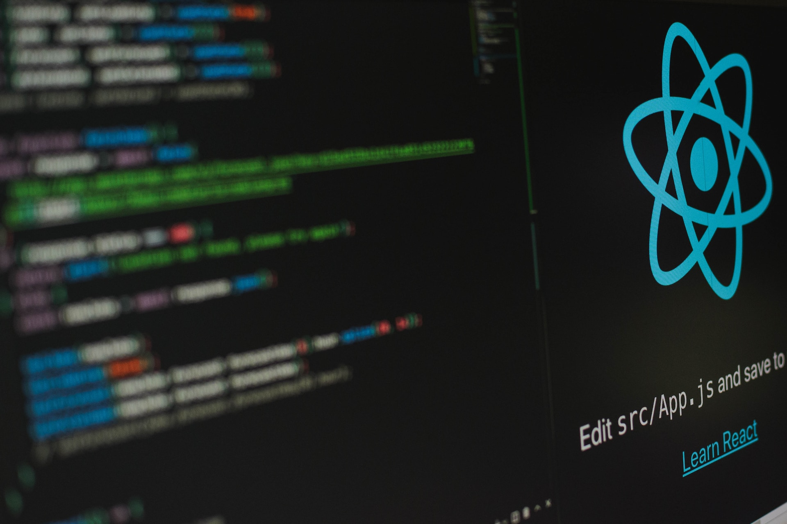
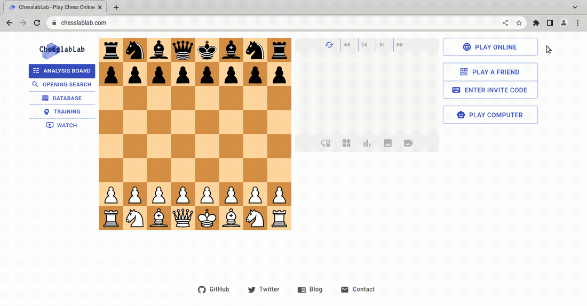
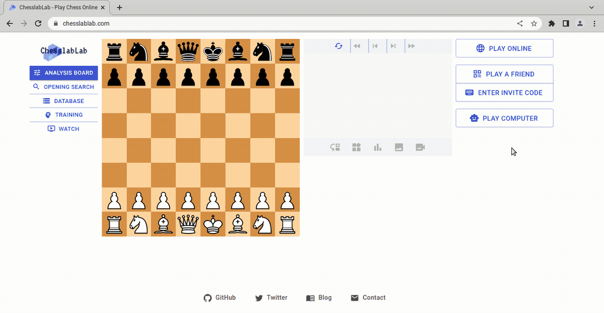

Sept 8, 2022 by Jordi Bassaganas
How to Share State Variables Between React Components
Stop writing the same thing over and over again
 Photo by Lautaro Andreani on UnsplashWhen developing React apps, it's quite common to write reusable functional components which internal state will be shared by other Hooks. I had to do this recently while working on React Chess, a React Redux chessboard connected to a chess server.
Check out this demo.
I managed to share a state variable between multiple components as shown in the animations below.
 As you can see, a dialog pops up when clicking on any of these buttons:
- Play Online
- Play a Friend
- Play Computer
The thing is you don't want to reinvent the wheel and write the same color selection code over and over again. All three dialogs (parents) use the same functional component (child) to allow users select the color of the pieces.
Here are the React files involved.
- src/features/dialog/CreateInviteCodeDialog.js
- src/features/dialog/createInviteCodeDialogSlice.js
- src/features/dialog/PlayOnlineDialog.js
- src/features/dialog/playOnlineDialogSlice.js
- src/features/dialog/PlayComputerDialog.js
- src/features/dialog/playComputerDialogSlice.js
Each dialog has been implemented according to
Redux Toolkit best practices.
The MUI code is written in a file ending with the word Dialog while its
state management logic is encoded in a
slice.
It's two files for each dialog.
SelectColorButtons is a reusable, self-contained component
meaning it doesn't need any slice because its state is internal. In other
words, it doesn't actually make sense for it to be accessed by other components
globally via a Redux store.
SelectColorButtons basically receives the props
from a parent component and changes its value whenever an icon button
is clicked on.
const handleSelectColor = (color) => {
setColor(color);
};
This is achieved by the handleSelectColor() function working
along with React's useEffect Hook which listens for a state
change in the color variable.
React.useEffect(() => {
props.color = color;
}, [color]);
That's it!
Now let's have a look at the other way around.
The code of the parent components is perhaps a different story. A harsh truth nobody wants to hear about but it's worth saying is that full-stack web development may not be too obvious at times. Probably this is the case with React Chess provided that it communicates with both an API and a WebSocket server.
It is not the purpose of this post to go into the details of how React Chess works.
So I've removed the lines of code for the sake of simplicity to focus on what really matters. Remember, we want a state variable to be shared between components in a simple way.
Let's have a look at PlayComputerDialog as an example.
The useState Hook is used in PlayComputerDialog
to manage the internal state of the dialog. The object variable
fields holds the two values required to play the computer:
level and color.
const [fields, setFields] = React.useState({
level: 1,
color: 'rand'
});
The dialog fields are passed to the child component as props.
<SelectColorButtons props={fields} />
Thus, the user can select a color in the child component while the
parent gets automatically updated via the fields variable.
Conclusion
A simple way to share a state variable between a parent and a child
component is to make sure that the former passes it to the latter as
props.
In this example, we've seen how the fields of
PlayComputerDialog are passed to SelectColorButtons.
props.color is then updated in the child component whenever
its internal state changes. This is achieved by React's useEffect
Hook which listens for a state change in the color variable.